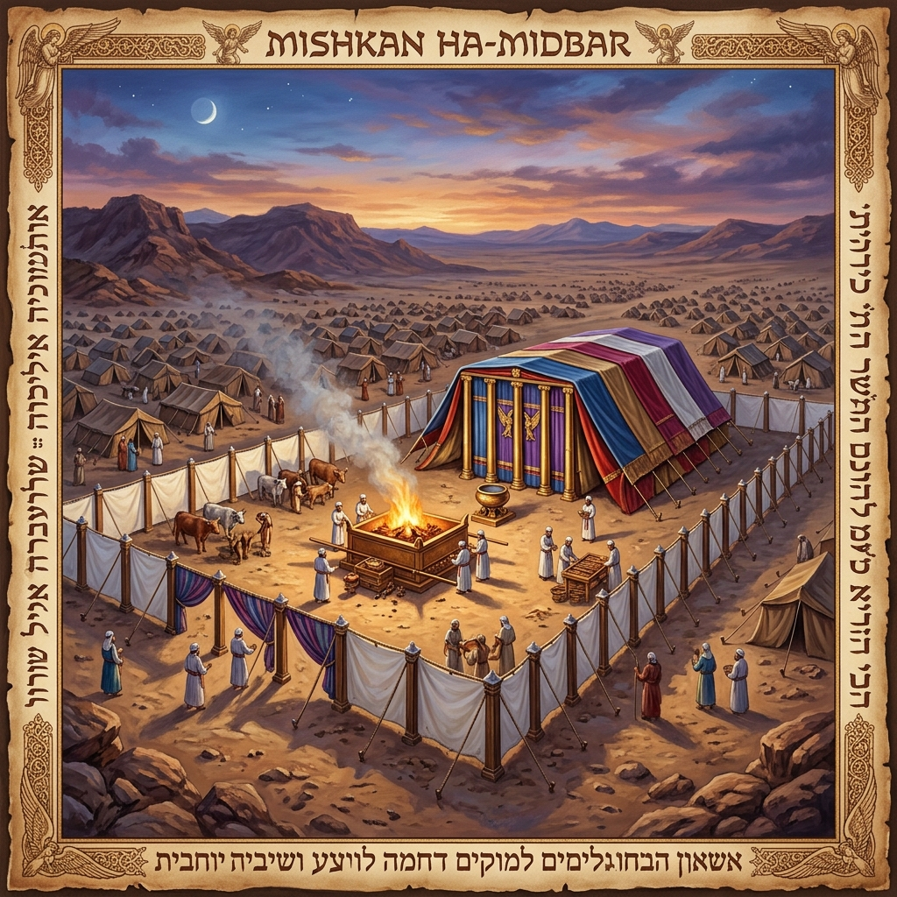
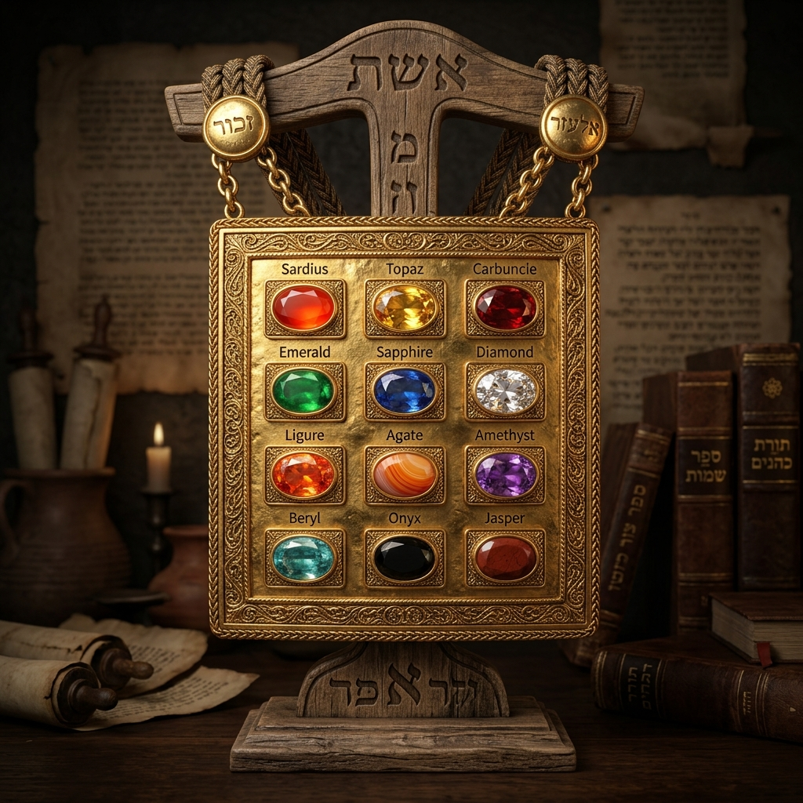
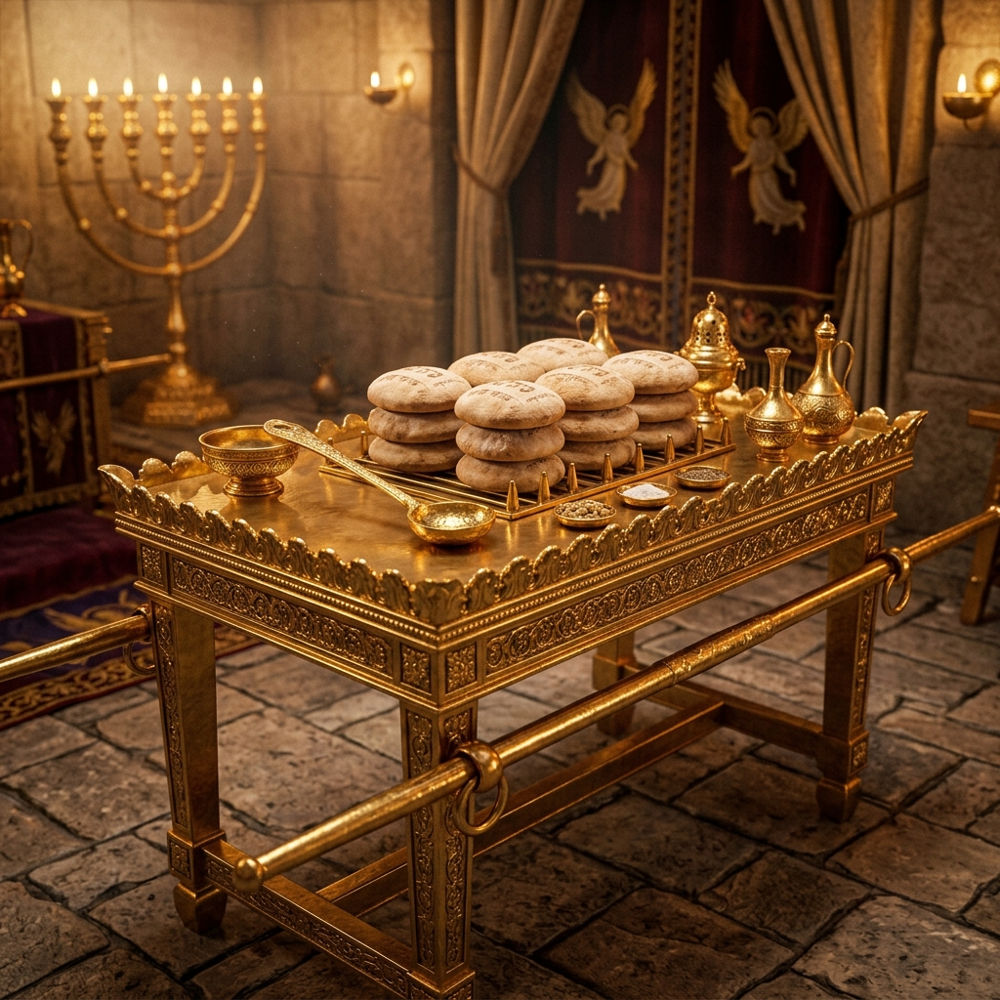
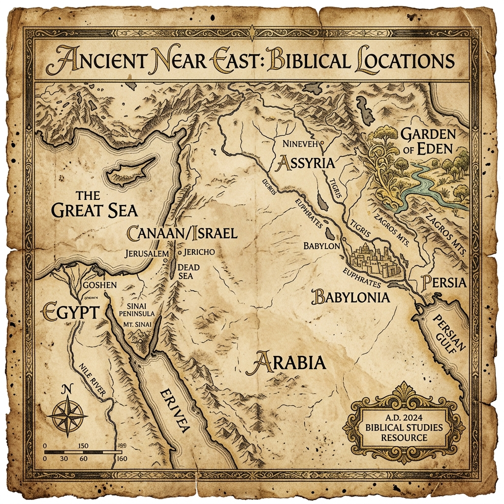

J Seeds Bible College
பழைய ஏற்பாடு கண்ணோட்டம்
Old Testament Overview
A Comprehensive Journey from Genesis to Malachi
ஆதியாகமம் முதல் மல்கியா வரை ஒரு ஆழமான ஆய்வு
Biblical Timeline
வேதாகம காலவரிசை
சிருஷ்டிப்பு – Creation
தேவன் வானத்தையும் பூமியையும் சிருஷ்டித்தார். மனிதனை தமது சாயலிலும் ரூபத்திலும் உருவாக்கினார்.
ஆதியாகமம் 1–2 அதிகாரங்கள். ஆறு நாட்களில் சிருஷ்டிப்பு நிறைவடைந்து ஏழாம் நாள் தேவன் ஓய்வு கொண்டார். ஏதேன் தோட்டத்தில் ஆதாமும் ஏவாளும் வாழ்ந்தார்கள்.
முற்பிதாக்கள் – Patriarchs
ஆபிரகாம், ஈசாக்கு, யாக்கோபு – தேவன் தமது உடன்படிக்கை ஜனத்தை உருவாக்கினார்.
ஆபிரகாமுக்கு தேவன் வாக்குத்தத்தம் அளித்தார். ஈசாக்கு மூலம் சந்ததி தொடர்ந்தது. யாக்கோபின் 12 மகன்கள் இஸ்ரவேலின் 12 கோத்திரங்களின் தந்தைகள் ஆனார்கள்.
புறப்பாடு – Exodus
மோசே மூலம் இஸ்ரவேல் எகிப்திலிருந்து விடுவிக்கப்பட்டது. பத்து வாதைகள், செங்கடல் பிளத்தல்.
சீனாய் மலையில் பத்து கட்டளைகள் வழங்கப்பட்டன. உடன்படிக்கை ஏற்படுத்தப்பட்டது. ஆசரிப்புக்கூடாரம் கட்டப்பட்டது. 40 ஆண்டுகள் வனாந்தர அலைச்சல்.
கானான் – Conquest
யோசுவாவின் தலைமையில் வாக்குத்தத்த தேசம் சுதந்தரிக்கப்பட்டது.
யோர்தான் நதி கடத்தல், எரிகோ மதிலின் வீழ்ச்சி, தேசப் பங்கீடு. "நானும் என் வீட்டாரும் கர்த்தரையே சேவிப்போம்" – யோசுவா 24:15
ராஜ்யம் – Kingdom
சவுல், தாவீது, சாலொமோன் – இஸ்ரவேலின் ஐக்கிய ராஜ்யம் ஸ்தாபிக்கப்பட்டது.
தாவீதின் உடன்படிக்கை, எருசலேம் ஆலயம் கட்டப்பட்டது, சாலொமோனின் ஞானம். பின்னர் ராஜ்யம் இரண்டாக பிரிந்தது.
ராஜாக்கள் & தீர்க்கதரிசிகள் – Kings & Prophets
ஏசாயா, எரேமியா, எசேக்கியேல் போன்ற தீர்க்கதரிசிகள் மனந்திரும்ப அழைத்தார்கள்.
பாவத்திற்கு எதிர்ப்பு, மேசியாவின் வருகை பற்றிய தீர்க்கதரிசனங்கள். நியாயத்தீர்ப்பு மற்றும் எதிர்கால மீட்பு நம்பிக்கை வழங்கப்பட்டது.
சிறையிருப்பு – Exile & Captivity
எருசலேம் அழிக்கப்பட்டது. யூதர்கள் பாபிலோனுக்கு சிறைபிடிக்கப்பட்டனர்.
நெபுகாத்நேச்சர் எருசலேமையும் ஆலயத்தையும் அழித்தார். 70 ஆண்டுகள் சிறைவாசம். தானியேல், எசேக்கியேல் இக்காலத்தின் முக்கிய தீர்க்கதரிசிகள்.
திரும்பி வருதல் – Return & Rebuilding
கோரேஸ் அரசன் கட்டளையால் யூதர்கள் நாடு திரும்பினர். ஆலயமும் மதிலும் மீண்டும் கட்டப்பட்டன.
செருபாபேல் தலைமையில் ஆலயம் கட்டப்பட்டது. எஸ்றா ஆன்மீக சீர்திருத்தம் செய்தார். நெகேமியா மதில்களை கட்டினார். மல்கியா கடைசி தீர்க்கதரிசி.
Books of the Old Testament
பழைய ஏற்பாட்டின் புத்தகங்கள்
Key Themes
முக்கிய கருப்பொருட்கள்
Covenant
உடன்படிக்கை
தேவன் தமது ஜனங்களுடன் ஏற்படுத்திய புனிதமான உறவு ஒப்பந்தம். ஆபிரகாம், மோசே, தாவீது உடன்படிக்கைகள்.
Law
நியாயப்பிரமாணம்
பரிசுத்த வாழ்க்கைக்கான தேவனுடைய வழிகாட்டுதல். பத்து கட்டளைகள் மற்றும் நடைமுறை சட்டங்கள்.
Sacrifice
பலி
பாவத்திற்கான பரிகாரம் மற்றும் தேவனை அணுகுவதற்கான வழி. கிறிஸ்துவின் பலியின் முன்னிழல்.
Obedience
கீழ்ப்படிதல்
தேவனுடைய கட்டளைகளுக்கு கீழ்ப்படிதல் ஆசீர்வாதத்தையும், கீழ்ப்படியாமை தீர்ப்பையும் கொண்டுவருகிறது.
God's Presence
தேவனுடைய பிரசன்னம்
ஏதேனிலிருந்து ஆலயம் வரை, தேவன் தமது ஜனங்களோடு வாசம் செய்ய விரும்புகிறார்.
Biblical Artifacts Gallery
வேதாகம காலத்துப் பொருட்கள்
உடன்படிக்கை பெட்டி
Ark of the Covenant
தேவனுடைய உடன்படிக்கையும், அவருடைய பரிசுத்த பிரசன்னமும் இஸ்ரவேல் மத்தியில் வாசம் செய்ததின் அடையாளம்.

ஆசரிப்புக்கூடாரம்
The Tabernacle
வனாந்தரத்தில் தேவன் தமது ஜனங்களுடன் தங்குவதற்காக உருவாக்கப்பட்ட முதல் புனித ஆலயம்.
தாவீதின் கவண் கல்
David's Sling
சிறுவன் தாவீது மாபெரும் கோலியாத்தை வென்றது, மனித பலத்தை விட தேவனுடைய வல்லமை மேலானது என்பதை காட்டுகிறது.
அக்கினி ரதம்
Chariot of Fire
எலியா தீர்க்கதரிசி பரலோகிற்கு எடுத்துக்கொள்ளப்பட்ட நிகழ்வு, மரணத்தை வெல்லும் தேவனுடைய வல்லமையை குறிக்கிறது.

ஆசாரியரின் மார்ப்பதக்கம்
High Priest Breastplate
யாத்திராகமம் 28:15–21. 12 விலையுயர்ந்த கற்களைக் கொண்டது, ஒவ்வொன்றும் இஸ்ரவேலின் 12 கோத்திரங்களைக் குறிக்கின்றன.
பொன் குத்துவிளக்கு
Golden Menorah
யாத்திராகமம் 25:31–40. ஏழு கிளைகளைக் கொண்ட பொன்னால் ஆன விளக்கு, தேவனுடைய மாறாத ஒளியைக் குறிக்கிறது.

சமுகத்தப்ப மேஜை
Table of Showbread
யாத்திராகமம் 25:23–30. 12 அப்பங்கள் வைக்கப்படும் மேஜை, இஸ்ரவேல் கோத்திரங்களுக்குத் தேவன் செய்யும் பராமரிப்பின் அடையாளம்.
தூபபீடம்
Altar of Incense
யாத்திராகமம் 30:1–10. பரிசுத்த ஸ்தலத்தில் நறுமணமுள்ள தூபம் காட்டப்படும் பீடம், இது ஜெபங்களின் அடையாளமாகும்.
ஆரோனின் துளிர்த்த கோல்
Aaron's Rod
எண்ணாகமம் 17:8. அற்புதமாகத் துளிர்த்து பூப்பூத்த கோல், ஆரோனின் ஆசாரியத்துவத்தை உறுதிப்படுத்தியது.
பொற்பாத்திரம்
Pot of Manna
யாத்திராகமம் 16:33. வனாந்தரத்தில் தேவன் தந்த மன்னாவை நினைவுச்சின்னமாக வைக்கப்பட்ட பொற்பாத்திரம்.
Conquest & Journey Map
வேதாகம தேசங்களின் வரைபடம்

வரைபடத்தில் உள்ள இடங்களை கிளிக் செய்து அதன் சரித்திரத்தை அறியுங்கள்...
Click on the pulse markers to explore biblical history.
Video Teachings
வீடியோ போதனைகள்
Old Testament Overview Playlist
பழைய ஏற்பாடு கண்ணோட்டம் – முழு வீடியோ தொகுப்பு
Watch the complete video series covering every book of the Old Testament. Subscribe to stay updated with new teachings.
Watch Full Playlist on YouTube